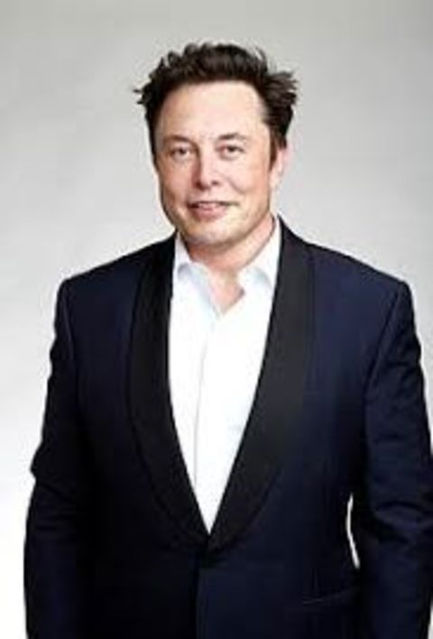
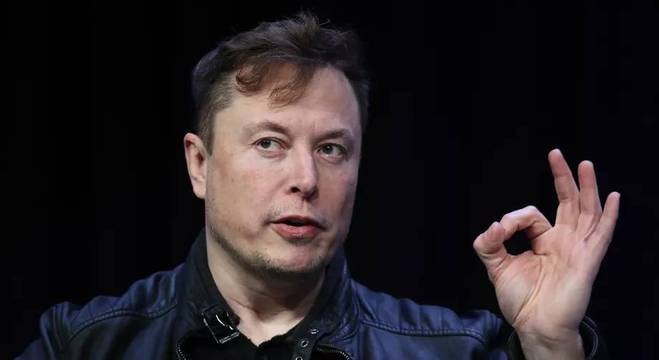
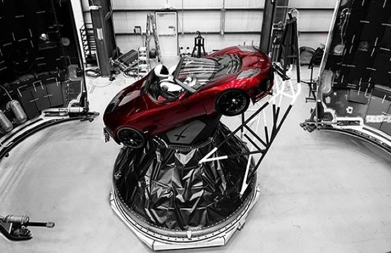

Elon Musk (1971) é um empreendedor norte-americano de origem sul-africana. É o fundador e CEO da "SpaceX", a primeira empresa a vender voo comercial para a Lua. É co-fundador e CEO da companhia "Tesla Motors" pioneira na fabricação de carros elétricos.
Elon Musk nasceu em Pretória, África do Sul, no dia 28 de junho de 1971. Filho de pai sul-africano e de mãe canadense desde cedo mostrou seu talento para computadores e seu espírito empreendedor.
Com 12 anos, Musk criou um jogo de videogame, o “Blastar”, que em pouco tempo foi vendido por 500 dólares. Com 16 anos pensou em instalar um fliperama, mas não teve a autorização de seus pais.
Em 1989, Musk mudou-se para o Canadá, em busca de melhores oportunidades de trabalho. Ingressou na Queen’s University, em Kimgston, Ontário.
Em 1992 se transferiu para a Universidade da Pensilvânia, na Filadélfia, onde obteve o bacharelado em Física e Economia em 1995. Nesse mesmo ano, iniciou o PhD em Física na Universidade de Stanford, na Califórnia, mas em pouco tempo trancou a matrícula.
Ainda em 1995, Elon Musk fundou a "Zip2", uma empresa que fornecia conteúdos para jornais online. Em 1999, a Zip2 foi vendida para a Compaq, fabricante de computadores, por 370 milhões de dólares.
Logo em seguida, Musk fundou a "X.com", empresa de pagamentos e transferências financeiras. Em 2000, a X.com se fundiu com a Confiniti e deu origem ao "PayPal", principal serviço de transferência de dinheiro online. Em 2002, a eBay comprou a PayPal por 1,5 bilhões de dólares.
Em 2000, Musk fundou a “Space Exploration Techonologie” (SpaceX), para fazer foguetes a custos mais baixos e realizar viagens espaciais. Os dois primeiros foguetes foram o “Falcon 1 (lançado pela primeira vez em 2006) e o “Falcon 9” (lançado pela primeira vez em 2010).
Em janeiro de 2011, a SpaceX tornou-se a primeira empresa no mundo a vender um voo comercial à Lua. Musk desenvolveu um foguete reutilizável que poderia levantar voo e retornar à plataforma que o lançou.
A partir de 2012, o foguete Grasshopper fez vários voos curtos para testar a nova tecnologia.
A SpaceX também desenvolveu a Nave Dragon, que leva suprimentos para a Estação Espacial Internacional e também projetada para transportar até sete astronautas.
No dia 7 de janeiro de 2018, foi lançada a nave “Falcon 9” para uma missão secreta chamada Zuma, que pertence ao governo norte-americano e transportou um satélite que ficará na órbita baixa da Terra.
Além de ser CEO da SpaceX, Musk também foi o designer chefe na construção dos foguetes Falcon, Dragon e Grasshopper.
Pioneira na fabricação de carros movidos a bateria, a companhia americana Tesla Motors é uma empresa localizada em Palo Alto, Califórnia, Estados Unidos. Fundada pelos empresários Martin Eberhard e Marc Tarpenning, em 2004, Musk tornou-se um de seus principais financiadores.
Em 2006 a Tesla apresentou seu primeiro carro o "Roadster" que tinha autonomia de 394 km com uma única carga, que custava 92 mil dólares. A Tesla Motors lançou também os modelos “S e o X”./
Aos poucos, o custo de produção foi caindo e em 2017 a Tesla lançou o "Model 3", que custa, na versão mais barata, 35 mil dólares. O Model 3 tem autonomia de 350 km, ou seja, essa é a distância que o carro consegue percorrer com uma carga de bateria.
Em novembro de 2017 a Tesla já acumulava uma lista de quase 500 mil interessados no novo carro elétrico. Para atender a toda essa demanda, Elon Musk construiu uma enorme fábrica de baterias no deserto do Estado de Nevada para abastecer os seus carros.
No dia 6 de fevereiro de 2018, a SpaceX lançou o “superfoguete” “Falcon Heavy”, que levou para o espaço, como carga de teste, o "Tesla Roadster", um carro elétrico, esportivo, vermelho, equipado com um “manequim astronauta” apelidado de “Starman”.
O Tesla Roadster viajou em direção à órbita de Marte e ficará no espaço por muitos anos. O Falcon Heavy é a primeira etapa de um ambicioso plano de Elon Musk, de levar o homem para Marte.
Elon Musk é também cofundador da "SolarCity", empresa de painéis solares, é vice-presidente da "OpenAI", uma empresa de inteligência artificial e fundador e CEO da "Neuralink", uma empresa de pesquisa médica, fundada em 2016 na Califórnia.
A Neuralink se propõe a criar uma interface cérebro-máquina para fazer dos seres humanos uma espécie de ciborgue alimentado pela inteligência artificial.
Elon Musk, não satisfeito com as escolas tradicionais, criou para seus cinco filhos a “Ad Astra” (para as estrelas, em latim), que funciona desde 2014 e recebe também os filhos de alguns funcionários de suas empresas.